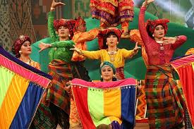
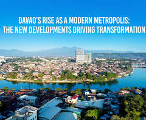

Music and dance in Davao del Sur are vibrant expressions of the province’s cultural identity, deeply rooted in the traditions of its indigenous peoples such as the Bagobo-Tagabawa, Bagobo-Obo, Matigsalug, and B’laan. These art forms are not merely for entertainment—they serve as powerful tools for storytelling, spiritual connection, and community celebration.
Traditional dances in Davao del Sur are deeply rooted in the heritage of its indigenous groups, such as the Bagobo Tagabawa and B’laan. These performances often mimic nature, celebrate life cycles, or depict agricultural practices.

In Davao del Sur, beadwork and jewelry making are deeply rooted in the traditions of indigenous groups like the Bagobo Tagabawa and B’laan, who use intricate beading to denote social status and spiritual connection. Today, this heritage blends with a growing contemporary scene featuring modern jewelry designers and interactive craft workshops in Davao City.

In Davao del Sur, cultural meaning and symbolism are deeply rooted in the province's identity as a "Land of Heights and Flight," referring to the majestic Mount Apo and the Philippine Eagle. The culture is a rich tapestry woven from the traditions of various indigenous groups, primarily the Bagobo, B'laan, and Manobo tribes.

Festivals in Davao del Sur and surrounding areas celebrate bountiful harvests, indigenous culture, and faith, featuring vibrant street dancing, floral floats, and community rituals. Major celebrations like the Dorongan Festival (Bansalan) highlight thanksgiving, while neighboring Davao City's Kadayawan highlights regional culture, fostering unity and tourism through, street parades, and native, artistic showcases.

Modern influences in Davao del Sur, particularly surrounding Davao City, center on rapid urbanization, digital transformation, and eco-tourism development. Key trends include the growth of Davao Global Township, a shift toward sustainable agriculture, increased eco-tourism near Mt. Apo, and the modernization of infrastructure while attempting to preserve indigenous cultural heritage.
